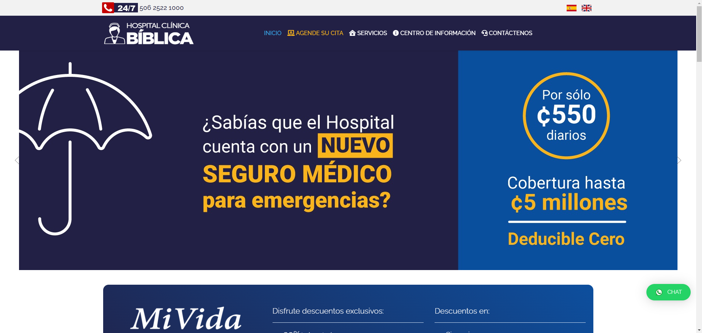

Consiste en la facilidad para acceder y poder navegar en la página web de forma intuitiva
,facil y rápido, sin embargo para obtener resultados óptimos significa tomar en cuenta
algunos factores clave
El funcionamiento de una página web es un factor clave para que un usuario permanezca en
ella, realice una compra o la recomiende. Para ello entra en juego la usabilidad web,
que es el grado de facilidad para acceder y navegar por una web de forma intuitiva,
sencilla y segura. Debemos tomar en cuenta algunos aspectos importantes tales como,
Eficiencia consiste en que el usuario logre cubrir las necesidades, Eficacia al momento
de que el usuario consigue su objetivo en tiempos de espera cortos y por ultimo
Satisfacción para que el usuario considere que la exploracion de la web fue sencilla y
rapida
Un entorno amigable es importante para el usuario
¿Cual es la importancia de la usabilidad web?
Uno de los objetivos importanes es lograr un mejor posicinamiento SEO, muchas veces la falta
de usabilidad web es la que provoca el abandono de las páginas web, esto sucede porque si el
sitio es dificil de encontrar o la informacion tambien es díficil de encontrar , si la
página no es rápida incluso si no tiene adaptacion a otros dispositivos moviles que a esto
se le conoce como Responsivo se podria perder un cliente potencial dependiendo el publico al
cual va dirigido el sitio web
"
Los principios de la usabilidad web serian los siguientes:
Disponibilidad
Hace referencia al grado de facilidad al momento de ingresar a una página web, esta misma se
puede ver afectada por el host donde se aloja y por su compatabilidad con los dispostivos
que usen los usuarios
Claridad
Es el núcleo de la usabilidad web, las personas que ingresen al sitio vienen con objetivos en
mente, si el interfaz que le proporcionamos no es claro y no transmite la informacion, les
llevara más tiempo lograr encontrar lo que necesitan , es por eso que este principio es muy
importante
Reconocimiento
Es la forma de describir el proceso de aprendizaje al que son sometidos los usuarios cuando
interactuan con nuestro sitio web por primera vez, todo sitio web necesitan al menos unos
segundos de analisis antes de que el visitante interactue con la misma
Credibilidad
A pesar de que los usuarios logren encontrar facilmente el contenido que ellos buscan , si no
confian en la página , la misma seria inutil para ellos , debemos asegurarnos de demostrar
credibilidad y confianza al usuario
Relevancia
Generar contenido atractivo requiere identificar con precisión al público objetivo, comprender
sus deseos y responder a sus necesidades de la manera más clara posible.
Ejemplos
Disponibilidad
Una plataforma de alojamiento distribuida robusta como Amazon Web Services (AWS) garantiza un
tiempo de actividad del 99.9% para sitios web de comercio electrónico. Además, optimiza el
diseño responsivo para que los usuarios puedan acceder y navegar fácilmente desde cualquier
dispositivo, ya sea una computadora de escritorio, una tableta o un teléfono móvil.
Claridad
Un sitio web de noticias tiene un diseño limpio, un menú de navegación que se puede ver
fácilmente y categorías en la parte superior. Los artículos se dividen en secciones que son
fáciles de comprender (noticias, deportes, entretenimiento, etc.). La tipografía es legible
y los títulos de los artículos son concisos y descriptivos, lo que permite a los usuarios
encontrar rápidamente lo que buscan sin sentirse abrumados o confundidos.
Reconocimiento
Un sitio web de banca en línea coloca su logotipo en la esquina superior izquierda de todas
las páginas y usa iconos y terminología comúnmente reconocidos. Además, sigue estándares de
diseño web que permiten a los usuarios aprender rápidamente cómo navegar y usar las
funciones básicas sin aprender mucho.
Credibilidad
Un sitio web de una clínica médica proporciona información detallada sobre sus médicos y
personal, incluidas sus credenciales y experiencias. Además, incluye estudios de casos,
testimonios de pacientes y un blog actualizado con artículos informativos escritos por
expertos. Además, proporciona una imagen transparente y confiable al incluir enlaces a sus
asociaciones profesionales y perfiles en redes sociales.

Relevancia
Un blog de cocina dirigido a aficionados y chefs profesionales se compone de recetas, técnicas
de cocina, reseñas de productos y entrevistas con chefs famosos. Utiliza un diseño que
resalta las recetas más populares y las últimas publicaciones.